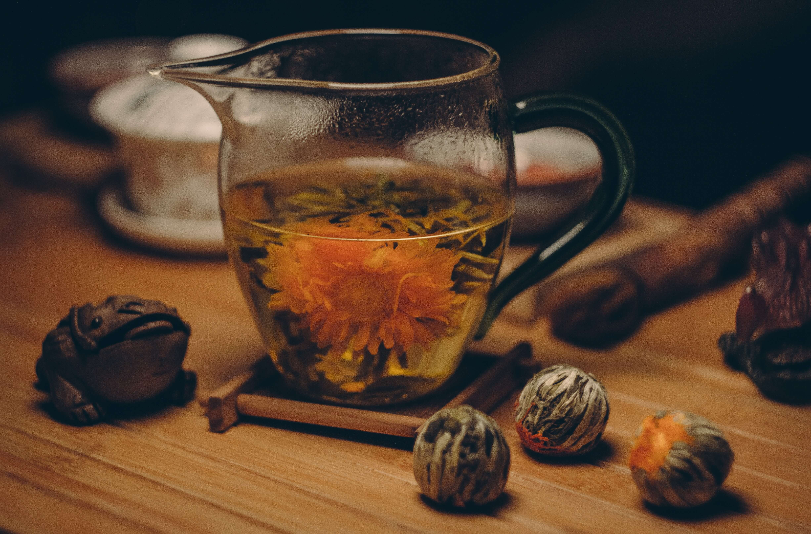

MENU
A progression of rare and beautiful ingredients where
texture, flavour and harmony is paramount. Delve into
the Quay dining experience with Peter Gilmore’s Ten
Course Menu and thoughtfully curated Wine List by
Wine Director Amanda Yallop, and bREAk Head Sommelier,
Shanteh Wong.
PETER RAMSAY
Peter’s appreciation of nature’s diversity
and his endless experimentation in the
kitchen and garden are the driving forces
in his cooking. Peter leads the bREAk team
with a focus on excellence, innovation and
hospitality.
EVENTS
Celebrate at one of Sacramento's most
awarded restaurants, with panoramic views
encompassing the Sacramento Bridge and
Elk Grove Opera House. From intimate dinner
parties in the Private Dining Room, to large
cocktail events in The Green Room.
DELICIOUS MONTH OUT
A DELICIOUS EVENING WITH PETER
Join us at bREAk on Thursday 26th March
for an intimate evening with chef
Peter Ramsay.
SPECIAL MENU
THE bREAk to BREAKFAST
As we step into a new decade,
bREAk launches a new way to
experience breakfast by the
Sacramento Bridge
TEA TIME
TRY TEA INSTEAD OF COFFEE
We import quality teas from all
around the world to offer a world
class experience for our guests

WINE NEWS
NEW WINE PAIRING
bREAk's Benchmark pairing is a
celebration of local and
international wines that have
set the standard for quality
and prestige
SPECIAL NEWS
INTRODUCING BRIDGECLIMB PINNACLE
Quay and Bennelong are excited to
announce a new partnership with
BridgeClimb; exclusively pairing
two of Sydney’s most iconic experiences.
CONTINUE READING OUR NEWS HERE